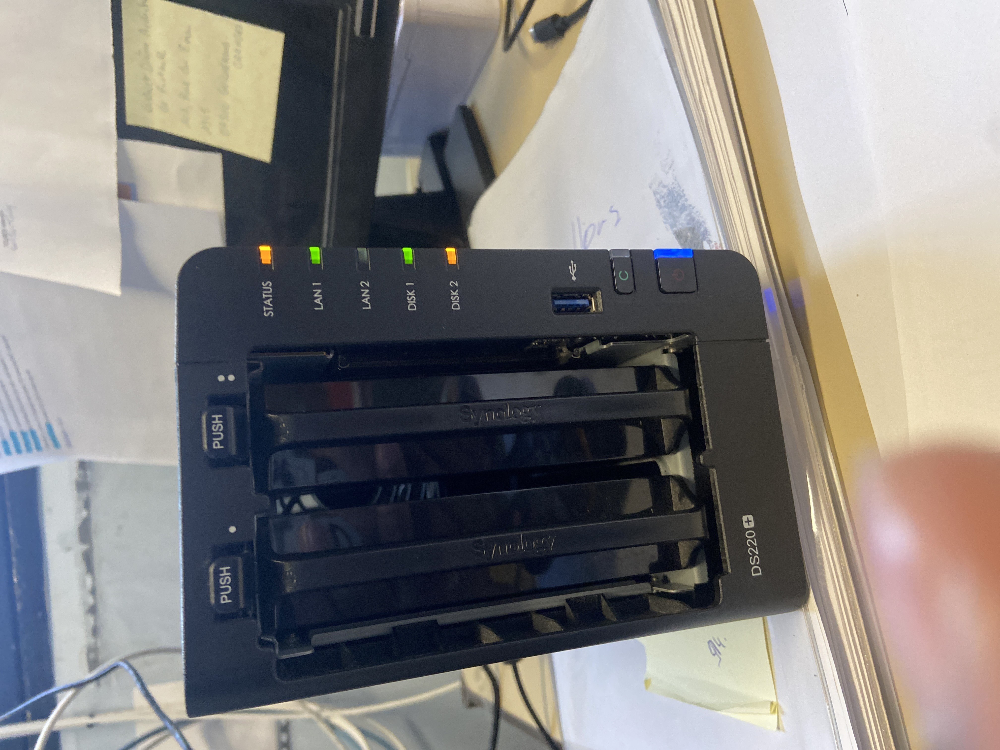
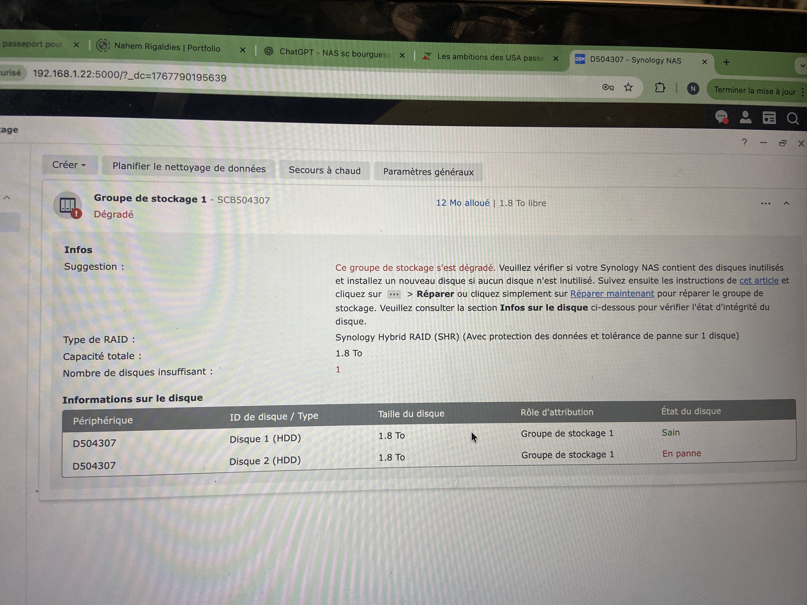
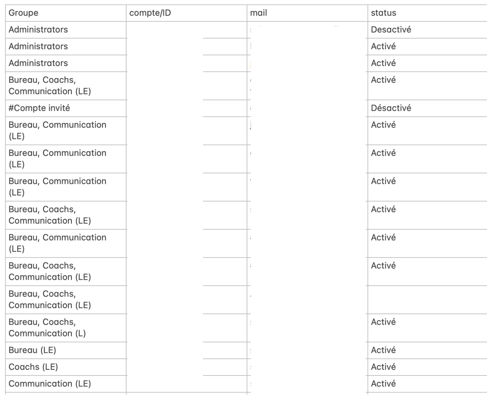
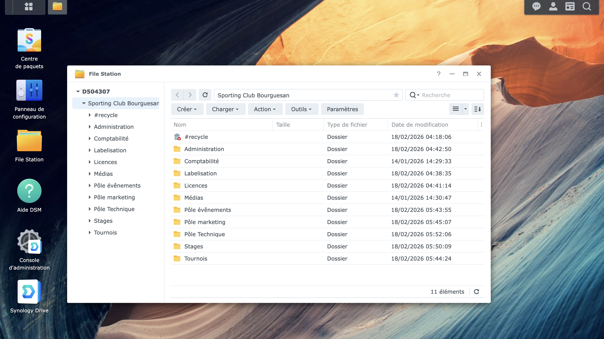
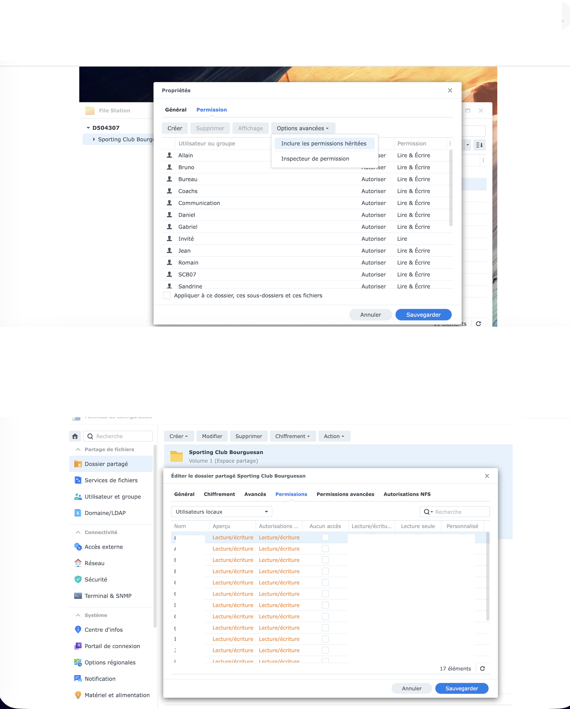
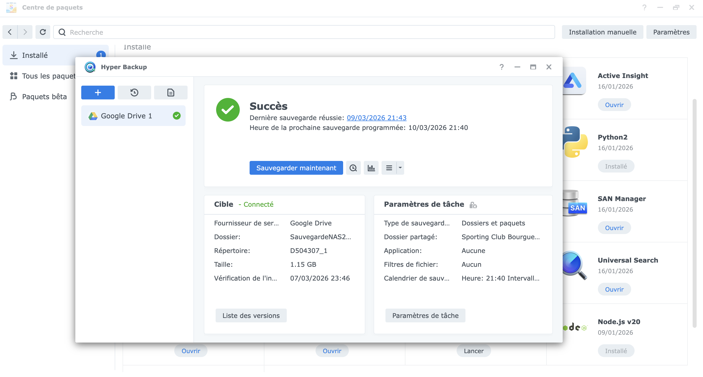
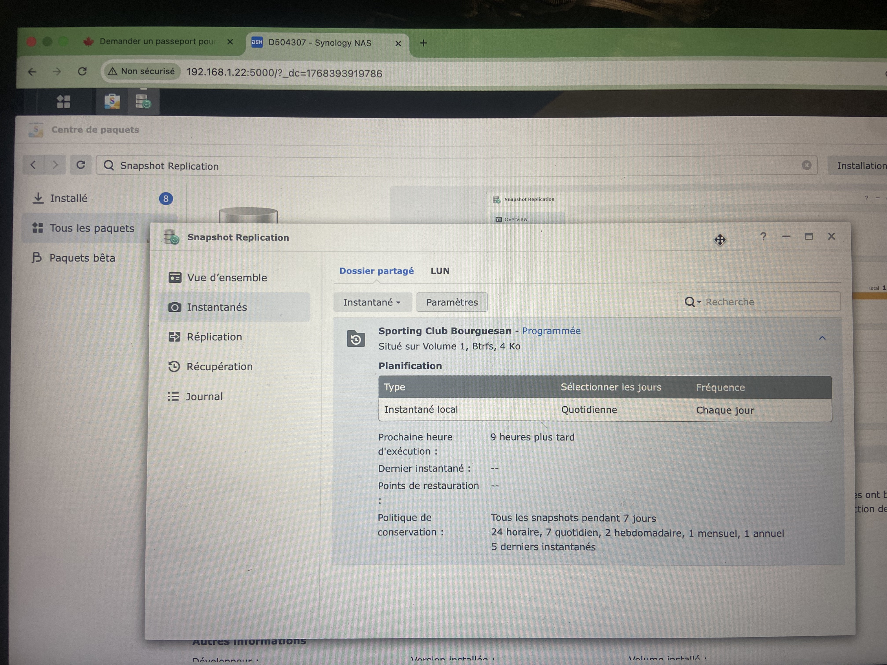

État initial (voyants / alertes)
AperçuDans le cadre de mon Service Civique au Sporting Club Bourguesan (SCB) à Bourg-Saint-Andéol, j’ai remis en production un NAS Synology DS220+ acheté en 2024 mais jamais utilisé. Objectif : restaurer le stockage, sécuriser l’accès, et rendre le NAS vraiment exploitable pour centraliser les documents et médias du club.
Le NAS était inutilisable : stockage dégradé, volume inexistant, perte d’identifiants administrateur, et signaux d’erreurs au démarrage (voyants rouges + bips). Après confirmation qu’aucune donnée importante n’était stockée (car aucun volume fonctionnel n’avait jamais été créé), j’ai pu reconstruire une base saine puis mettre en place une organisation complète : groupes, utilisateurs, dossiers partagés, sauvegardes, snapshots, accès distant et mesures de sécurité.
Dysfonctionnements identifiés sur le NAS :

État initial (voyants / alertes)
Aperçu
Stockage dégradé / disque en panne
AperçuLe projet a été structuré en “blocs” (comme une vraie mise en prod) :
Structure logique mise en place pour le club (exemple fidèle à ton organisation) :

Groupes (Administrators, Bureau, Coachs, Communication)
Aperçu
Dossiers partagés (SCB + arborescence)
Aperçu
Permissions et héritages
Aperçu
Hyper Backup - sauvegarde (cloud + disque externe)
Aperçu
Snapshots Btrfs - conservation (fréquence + rétention)
Aperçusmb://IP / Windows : \\IP)http://IP_DU_NAS:5000Résumé visuel rapide sur le : stockage, arborescence, Hyper Backup, snapshots, QuickConnect, pare-feu, utilisateurs/groupes.
Ce projet m’a apporté une expérience réelle en administration système/réseau, avec une logique “production” : diagnostic, choix techniques, mise en place, sécurisation, sauvegarde, et documentation. Pour l’association, le NAS devient enfin un outil utile : centralisation, partage, et meilleure continuité en cas d’incident.